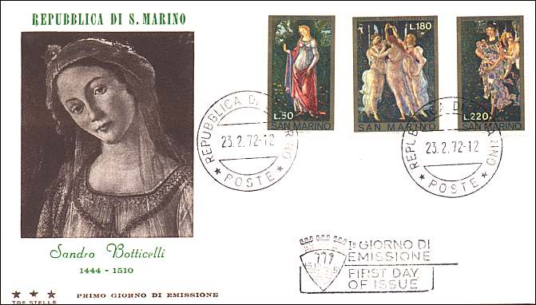
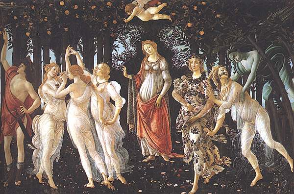
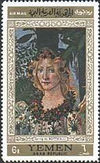
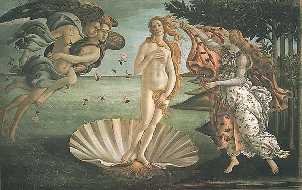
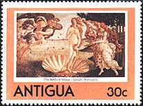

Offices Gallery, Florence. Sandro Boticelli.
← Recently Modernized Pages · Art Gallery · Home
Uffizi Gallery, Florence
Alessandro Botticelli
Halls 10-14. Alessandro Botticelli (1444-1510). The Allegory of Spring, 1477-1478. This painting was executed for the Castello vila of Lorenzo di Pierfrancesco de Medicis, the cousin of Lorenzo Magnifico. Its title, The Allegory of Spring, was given as a result of an interpretation of Vasari, but the allegoric signification of this composition has given a lot of discussions. It is sure today that the theme of the paintings was taken from a work of the painter Agnolo Politien, that makes an allusion to the "Kingdom of Venus".

The Goddess is shown in the middle of a garden full of flowers and fruits. She is surrounded, starting from left, by Mercury, by the group of three Graces who dance in the delicate game of transparencies of their very light veils, by The Spring, who takes the flowers from Flora, followed by Zephyr and at top by Amour who throws his arrows.
 |
 |
Halls 10-14. Alessandro Botticelli. The Birth of Venus. About 1486. This extraordinary painting was also ordered to Botticelli by Lorenzo di Pierfrancesco de Medicis for his villa from Castello. It was executed eight years after The Spring, but we find here the same melancholic and nostalgic spirit, the same mildness of the model, that peaks with the freshness and corporal nudity of Venus coming from the water.
 |
 |
 |